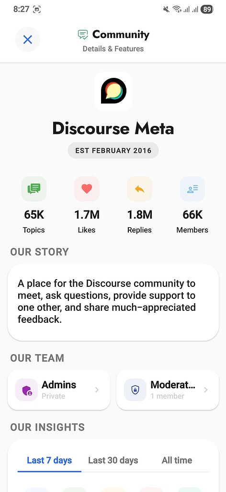

alltiagocom
With the right developer, is it possible to convert a forum into a real iOS and Android app?
What are the main challenges, if any (besides finding the right developer, of course)?

With the right developer, is it possible to convert a forum into a real iOS and Android app?
What are the main challenges, if any (besides finding the right developer, of course)?

Define ”real”? Because even PWA is ”real”, as is DiscourseHub.

It’s been done before, or in progress, by others, might be interested to check it out and ask them. These 2 were very recent ones:
But, afaik, it’s pretty tough to get everything Discourse has into a native app.
Both examples above don’t cover everything by far, which makes me think it’s not as simple as just wrapping it in something and calling it a day.
Also, if you look through Meta, you will find many instances of the same question asked and discussed already:

Cost of maintenance.
By “real” I mean that it belongs to the forum’s owner, not the official Discourse app where there’s more forums that users can add. An app people can download from the store with the forum’s name.
Thanks for sharing. I saw that DisHub recently.
I have an issue with people promoting stuff when they seem to just sign up to promote their product, but they have never interacted with the community before. It always feels suspicious…
And then for DisCorkie, for example, the developer hasn’t been active at all in his topic since April. Weird…
I’m thinking that maybe the app could cover the most used features, just to make it usable enough, and some other features like stuff related to user account, etc, could still rely on the browser?
At this point I’m just guessing. I just thought about it today, actually, and decided to ask.
I will check the other links as well. Thanks!
This would be something down the road, of course.
As a musician myself, this community will eventually be my main “hub” and place to communicate with not only my fans, but other musicians as well. More than my social media or my official websites. So, a bigger investment would be justified, because that’s where people will be able to find more of my stuff, up to date, exclusive content, etc.
I’m super tired of social media algorithms, short attention span, constant scrolling, etc. I rather focus on valuable content, than “fast-food” content.
Haha yes, I hear you, I’m not saying “use those” but it could still provide some context.
At least from the videos, DisCorkie looks pretty decent. Very “Discord-esque”, which is good, along with a desktop app as well.
The downside is that all the customization is lost.
But yeah, looking at those options, makes it look like it’s a possibility. I will keep that in mind for sure.
Appreciate it

The easiest thing you can try is deploying a TWA based on a PWA for Android. It’s really simple; it’s essentially publishing a PWA on the Play Store with official tools.
It’s a more involved process for iOS, especially because of the review process, but you can also use something like PWABuilder or a similar tool to help publish your web app there.
Both are just web views which will work almost the same as an installed PWA.
I saw other people talking about PWA, but I have no idea what that is. Gotta do some research. Thanks for the extra info.
As I mentioned, this is something to truly think about down the road. I’ve been using the platform as an admin since March, so I’m still exploring what can be done, how I want it to be structured, etc. I’m just gathering more info for future updates so when the time comes, I’m ready!
EDIT: @renato I just did a quick research and I understand what TWA and PWA are. It seems like a simpler and first step indeed. At least, people would be able to download it from the app store, and it would have my own icon, etc. Thanks.
The simplest to think of PWAs is that they are “installable web apps”. You can check this behavior on iOS when you “Add to Home Screen” and the website has the information needed to be “installed” (Discourse has it, so you can try it with your own site)
It then becomes visually standalone instead of opening inside a browser. Doing so is also a way for a website to use push notifications on iOS.

It would be brilliant to have a more detailed guide on how to do that, with a summary of the likely costs and maintenance requirements.
I’ve looked into it this in the past, and have been rather put off by how much it would cost to maintain.
Hey! DisCorkie developer here. It’s not weird that I wasn’t active on this topic. I just didnt want to Hijack a public forum to promote my app. Updates about DisCorkie are being published regularly here https://blog.appoutlet.dev/series/discorkie
The inspiration on Discord is on purpose. I find it very easy to switch servers and be active in more than one at the same time. So, why not to apply this concept to forums?
Im glad that you liked the UX. You can experience it in first hand by downloading it here DisCorkie
Removing the customisation initially was a strategical decision. DisCorkie is developed by just one dev (myself) and I decided to focus on the UX, basic features and make it available on all platforms.
Once the project has achieve a good level of maturity, the forum customisation will be on the roadmap.
When I said “weird” is just because I would expect a Discourse developer to be active on the forum when it comes to updates on the platform they use for their own product, asking questions, sharing issues they encounter, etc. Not necessarily focused on promoting the app, which I agree, it would probably be “annoying”, but at the same time, if the updates are balanced, meaningful, and probably all done in the same thread, I believe all users would benefit from your updates. If your app is good, then why not share it, get feedback from users, etc?
I agree. Discord is well designed (for the most part… there are things that make absolutely no sense, but…). The official Discourse app could actually mimic some of the features, one of them being the communities on the left, swipe gestures, etc.
I understand it. It makes sense. It’s better to have a simpler yet functional app than something that tries to do a lot and nothing really feels solid.
I have a native discourse app, hoping to release in May. I’ve mirrored 83% of discourse web into the mobile apps. I will publish and allow app trials for users with their own forums to test.
Slight update, I’ve created a client native app for almost anyone who has Discourse to use. It will be made available for free, with a few additional power user features that are paid.
I’m responding to you now via the client app.
